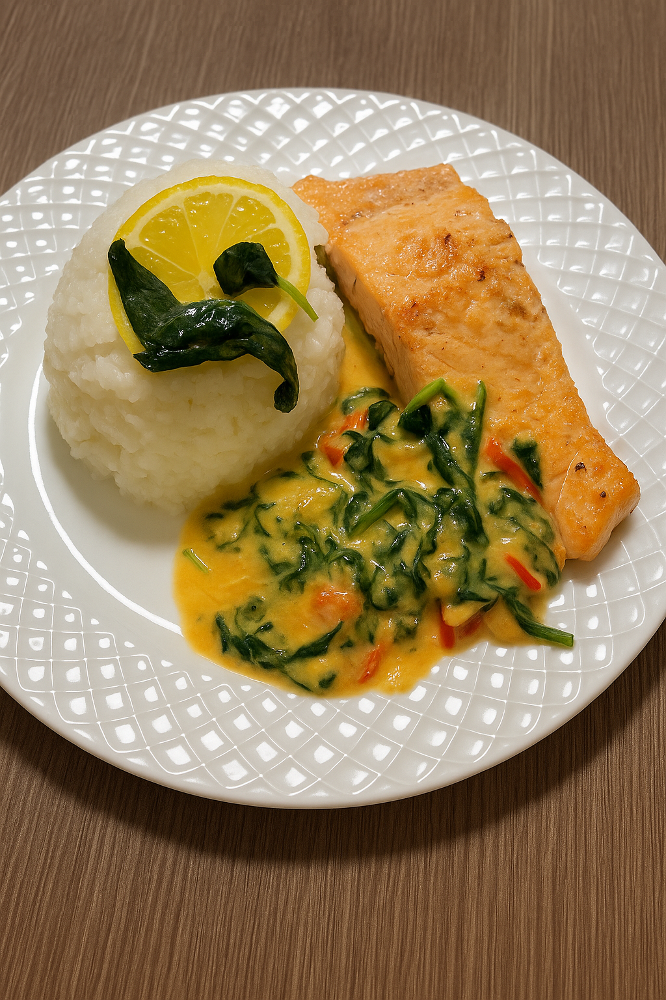
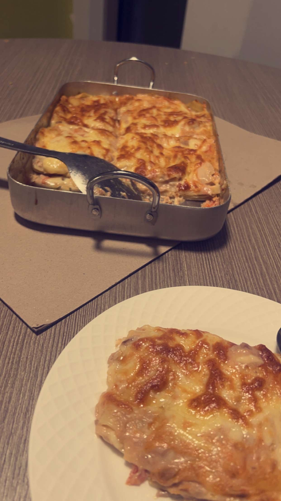
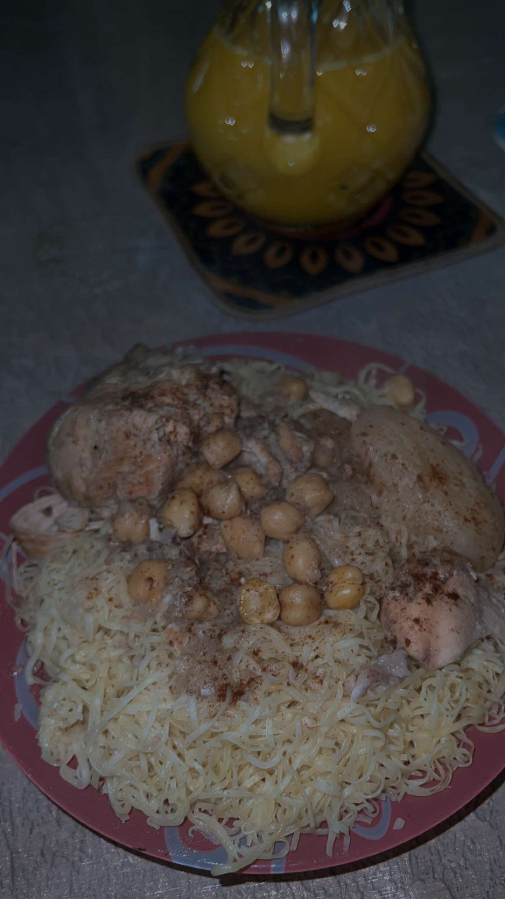
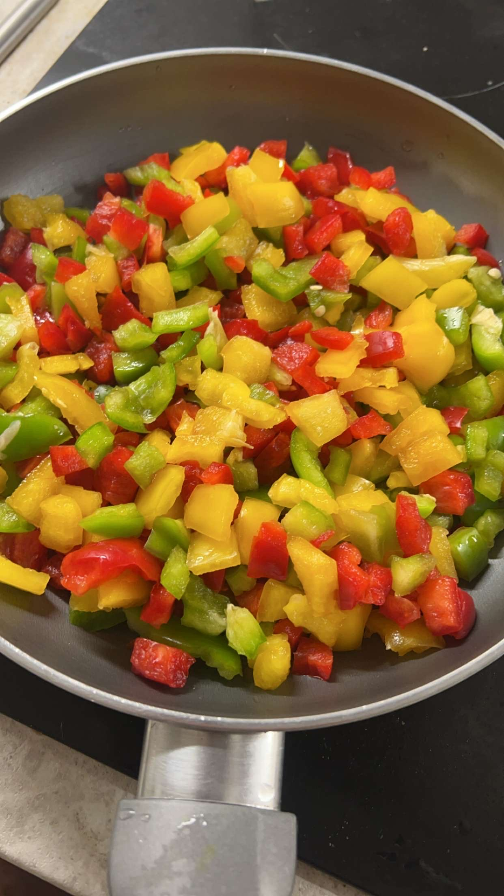
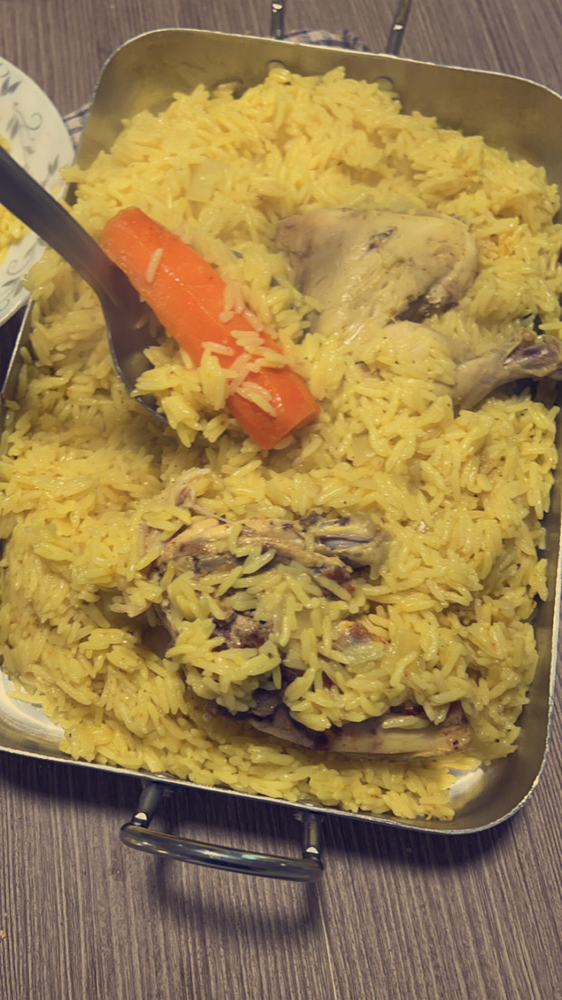

Delicious Recipes
From Algerian classics to global favorites, find easy-to-follow recipes for every occasion.
Explore delicious recipes, step-by-step video tutorials, and handy tips to master your kitchen skills.

Whether you're a beginner or an experienced cook, our website offers something for everyone. Discover traditional Algerian dishes alongside international favorites.
Learn essential cooking techniques, ingredient substitutions, and meal planning ideas that will help you become more confident and creative in the kitchen.
Don't forget to check out our interactive quiz page to test your cooking knowledge and learn new facts!
From Algerian classics to global favorites, find easy-to-follow recipes for every occasion.
Watch our chefs prepare mouth-watering dishes, guiding you through each step visually.
Discover insider tips on ingredient selection, preparation, and presentation to impress every time.
"Cooking is like love. It should be entered into with abandon or not at all." – Harriet Van Horne
Here are some handpicked meals to inspire your next cooking adventure!



